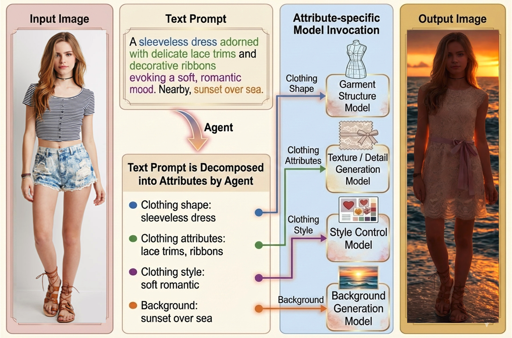
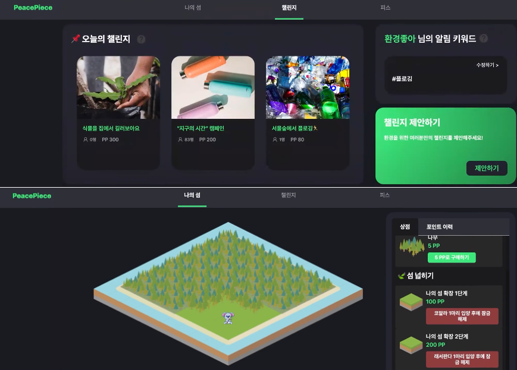
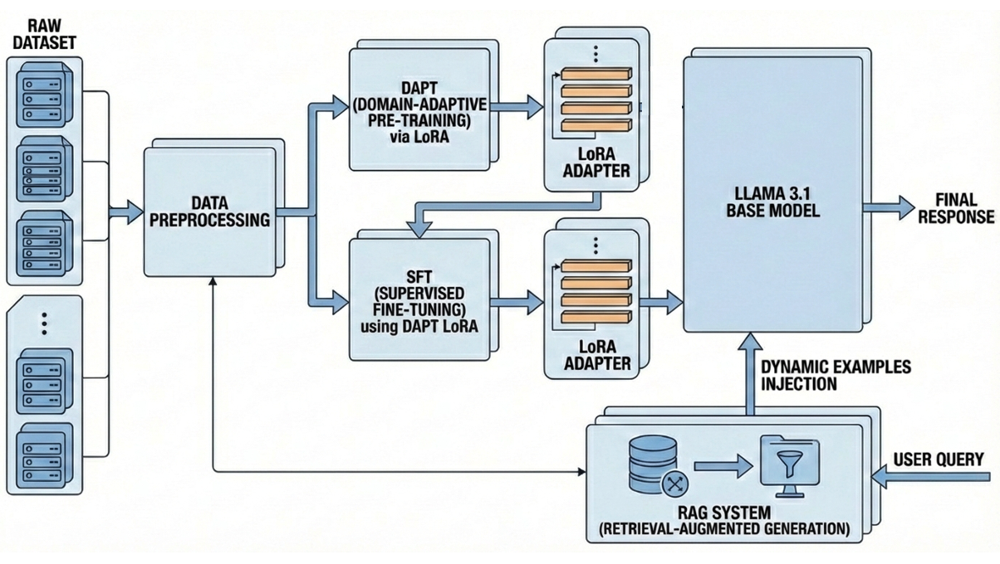
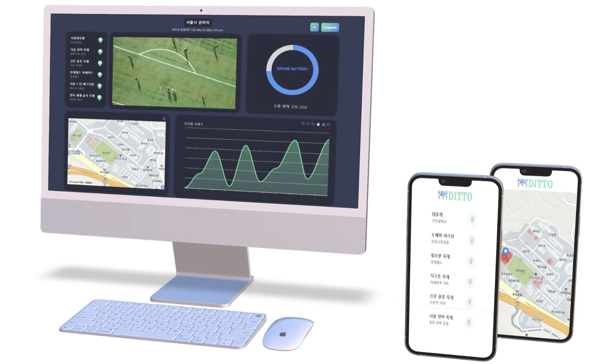

From ideas to working systems

VTONAgent
2025.09 ~ 2025.12긴 텍스트 프롬프트를 속성별로 분해 후, 속성별 최적 모델을 호출해 제어 가능성을 높이는 Agent 기반 VTON
Problem: 기존 방법은 긴 텍스트 프롬프트가 주어지면 1-2개의 속성만 반영 가능 → 텍스트 프롬프트 제어성 낮음
Approach: Shape/Attributes/Style/Background로 텍스트 프롬프트 분해 → 속성별 모델 선택·호출
Result: 언어 이해와 이미지 생성의 연결 방법을 통해, 긴 텍스트 프롬프트 제어성 향상
Tech: Agent Routing, Diffusion Model

Peace Piece
2022.07 ~ 2022.09친환경 활동을 기반으로 가상 섬을 꾸밀 수 있는 웹 플랫폼
Problem: 친환경 활동이 캠페인성 참여에 그치기 쉬워 지속적 참여를 유도하기 어려움
Approach: 친환경 챌린지 제안/참여 → 포인트 적립 → 포인트로 가상 섬 꾸미기(게임화)로 동기 부여
Result: 게임적 보상 구조로 친환경 활동의 지속 참여를 유도하는 인터랙티브 경험 제공
Role: 아이디어 제안 및 반응형 프론트엔드 개발
Tech: React, TypeScript

현대자동차 X LLM 기반 차량 도메인 변수명 자동 생성
2025.09 ~ now차량 Test Case로부터 규칙을 준수하는 변수명을 자동 생성하기 위한 LLM 파이프라인 구축
Problem: 수작업 변수명 생성의 비효율 + 범용 LLM의 차량 제어 도메인 반영 한계
Approach: 전처리를 통한 데이터셋 구축 → Prompt Engineering → DAPT·SFT로 도메인 적응 → RAG로 유사 예시 동적 주입을 통한 성능 고도화
Result: 각 단계 적용마다 성능이 일관되게 향상, 최종 F1 Score 81.73% 달성
Tech: DAPT(Domain-Adaptive Pre-training), SFT(Supervised Fine-Tuning), RAG(Retrieval-Augmented Generation)

DITTO: Drone Is Tracking Twenty-four-seven Ours
2023.01 ~ 2023.05드론을 활용한 야외 인구 밀집도 및 위험 감지 서비스
Problem: 기존 CCTV 중심의 인구 밀집도 관제는 시야 제약과 확장성 한계로 인해 실시간 모니터링 어려움
Approach: 드론 영상 기반 객체 인식으로 인구 밀집도를 추정하고, UI에서 실시간 분석 결과 시각화
Result: 실시간 밀집도 시각화를 통해 공공 안전 모니터링 및 선제적 대응의 활용 가능성 제시
Role: 반응형 프론트엔드 및 백엔드 CRUD 기능 개발
Tech: HTML, CSS, JavaScript, Django